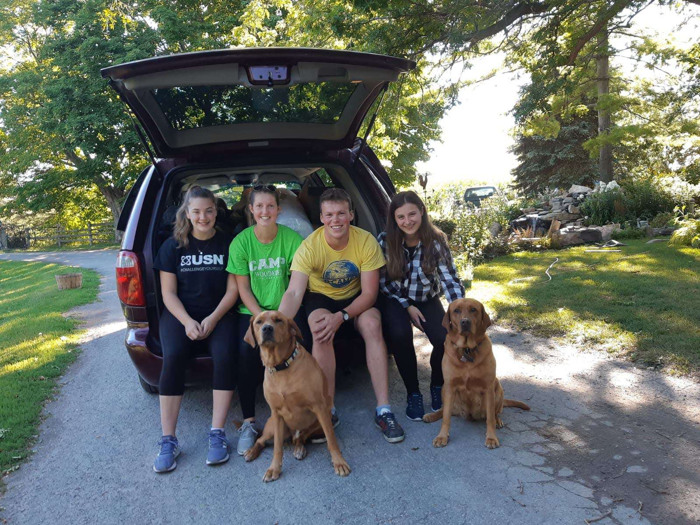
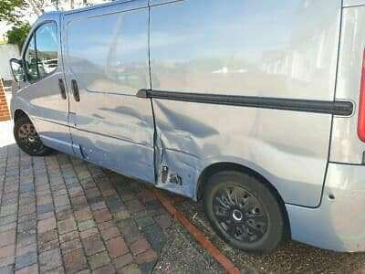
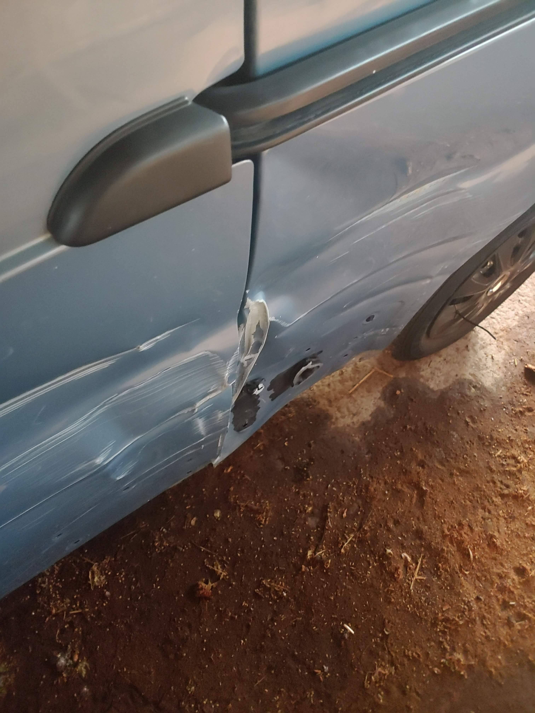

The main reason for this van came from my trip in Canada, which in itself came from a purely ridiculous notion in the first place. After working at camp in Summer 2020 I had said I wanted to do a big American road trip, mostly because I thought it was a thing after the shitty old E4 show Beaver Falls. Thus, the plan to "road trip to Alaska" was born once I got my place at Easter Seals Ontario and from there the plan sort of came together by far more luck than judgement.
Either way, mostly thanks to the Kressibuchers in Beaverton, Enola and I somehow organised a road trip across Canada for us and two of Enola's friends from home. The basic layout of the trip was that we bought a car (minivan) in Canada, and ended up somewhat successfully driving 5000 miles across the country, and having a fantastic time whilst doing so. The trip was also vastly cheaper than it ever would have been staying in hotels/flying/trains/buses etc. So when I returned to the UK for my graduation in October, I thought whether it might work outside of Canada as well, even if the scenery might not quite match Canada.
The initial idea was to spend a bit of my funemployment converting vans to campers and selling them to make money, but I'd spent all my money across the pond travelling and so didn't have any to invest in a van in the first place. Therefore, I had to work on other things during the final part of 2020 until I left for a ski season in December.
Que March 2020, my season in the alps wrapped up early and there appeared to be a long time ahead of us with not much to do, or as I will remember it: not-so-funemployment. So I began a search for a van, as this time I had money left over from season that I had been saving to blow on the last month when there was less work to do. After searching for a while and finally the restrictions easing enough to go out and buy one, I found one on eBay in June very close to home that we went to look at and bought on the spot. The van had a huge dent and scrape down one side which was going to take a lot of work to fix so I got a much more modern van than I should have with my budget, as it was about a third of the price of a similar vehicle without the scrape. The crucial thing about it though was that it didn't have rust underneath, which is the main thing that goes wrong on these vans that is impossible to do anything about.
However, I did finally have a van and it was road legal (minus getting tax and insurance) so all was going pretty well.
There was initially an idea to convert a high roof van for the obvious reason of being easier to live in as you can stand up, and have room for a shower and more amenities etc. Negatively though, this choice would mean I would have to store it on the farm as it would be too cumbersome to use for anything but camping holidays, and then I would also need to buy a car to use for myself, as I would likely need one in Bath. However, if I got a low roof van that, although cumbersome, would be able to serve as a car as well, it would mean I would only need one vehicle, one insurance policy, paying one lot of road tax and generally much easier.
In addition, because it was cumbersome, turbo diesel van it would discourage me from using in Bath for driving to training or similar short, otherwise pointless trips and thus actually saving me even more money and helping my fitness by using my bike more. The same can be said of pollution; I am using the van so irregularly and only for long or populous journeys, so even though is more polluting than a small petrol car, my emissions are less because of the greatly reduced use.
The reason I bought a low roof Vivaro was after my experience of driving a minibus in France. I knew they were pretty reliable vans and their abundance meant it was so easy to come by spare parts as every breakers yard has 10. The second reason was I knew the low roof Vivaros/Trafics could fit into almost all height limitations, unlike some of the other low roof vans like the LDV Maxxus. That meant all the height limitations found in cities and towns and any on free camping spots like the Nyon telecabine parking in Morzine.
As well as being my daily use vehicle that I could take camping whenever I wanted, I also wanted friends to be able to use it so as I didn't have to do all the driving unlike in Canada, and so that they could use it without me, potentially even renting it out to help pay for costs etc.
When it came to getting insurance, I wanted a policy I could easily add people to or take them off from. All the cheaper quotes which were around £700 seemed to impossible to add people or could only be done for over 25s unless adding them for the entire policy and so would double the cost. I ended up with NFU which although more expensive, was going to be so much better for adding people on and off, until they told me their any driver policy would only ramp it up a bit more. I went for that as it meant there was never going to eb any hassle of contacting an insurance company, and anytime I was injured at hockey/someone else wanted to share the driving on a long drive, they just could with zero hassle.
I had the idea and the van, all that needed to happen now was actually convert it so that people would actually want to use it.